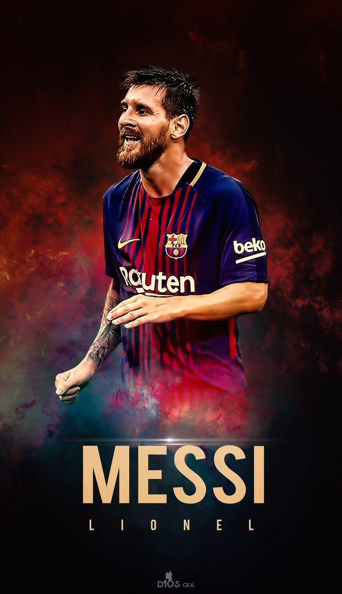

Lionel Messi is an Argentine-born football (soccer) player who has been named the world's best men's player of the year seven times (2009–12, 2015, 2019, and 2021). In 2022 he helped Argentina win the World Cup.Lionel Messi has become the most decorated player in football history following PSG's Ligue 1 triumph.
Ronaldo is known for his incredible speed, agility, and goal-scoring ability. He has scored over 800 career goals for the club and country. Ronaldo has played for some of the biggest clubs in the world, including Real Madrid and Juventus. He is the all-time top scorer for the Portuguese national team.
Born into a sporting family. The star footballer hails from a sporting family. Lewandowski's father Krzysztof was a national-level Judo champion and also played football for Polish side Hutnik Warszawa. His mother Iwona Lewnandowska is a former volleyball player who represented AZS Warszawa
Erling Braut Haaland is a Norwegian professional footballer who plays as a striker for Premier League club Manchester City and the Norway national team.Considered one of the best players in the world, he is known for his speed, strength, positioning, and finishing inside the box. Haaland holds the record for the most goals scored by a player in a single Premier League season, with 36.
Kylian Mbappé has the combination of being one of the fastest players in the world, the best dribblers and has a frightening ability to score goals, all of which makes him one of the best players and most clinical forwards to ever play the game. .

Neymar, was born on February 5, 1992, in Mogi das Cruzes, a city near São Paulo. He grew up in a small house in a working-class neighborhood with his father, mother, and younger sister, Rafaella. Neymar started playing football after drawing inspiration from his father who was a professional footballer himself.